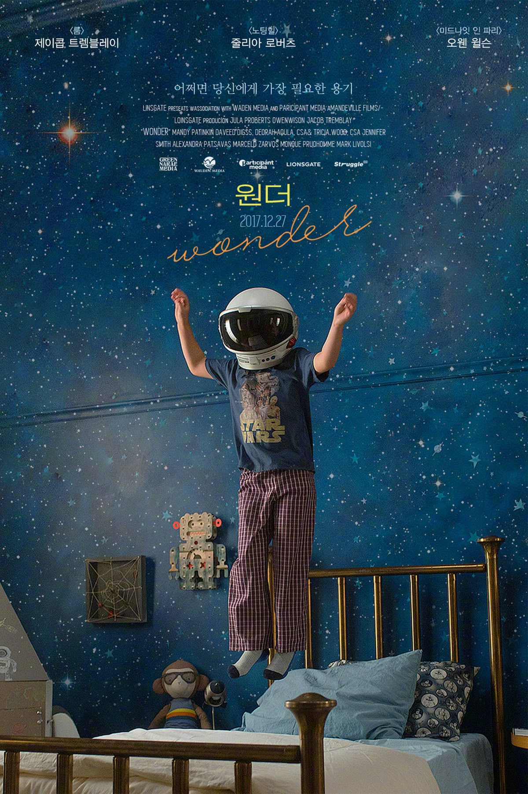
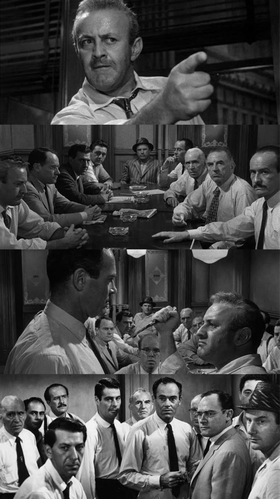
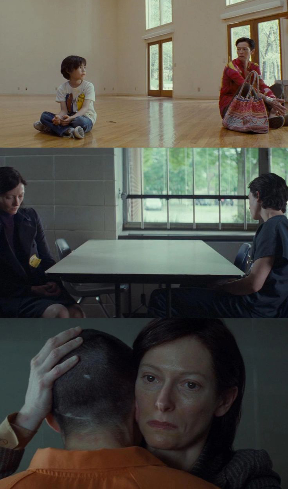

Movie Lover, 김민정
나를 바꾼 영화 이야기
- 🎬 하루 한 편의 영화와 커피를 즐기는 사람
- 💻 한양사이버대학교 컴퓨터공학 전공 학생
- 영화의 색감과 미장센에 높은 관심
- 📋 아직 진행한 프로젝트가 없어서,
부득이 제 인생을 바꾼 영화를 소개하는 페이지로 제작해보았습니다.

내가 영화에 푹 빠지게 된 이유

선천적 안면 기형으로 27번의 수술을 받은 10살 소년이 태어나 처음으로 학교에 가면서 벌어지는 이야기입니다. 늘 헬멧 속에 숨어 지내던 소년 편견 어린 시선과 괴롭힘에 맞서며 진짜 세상을 마주합니다. 소년의 긍정과 용기가 가족과 친구들의 시선까지 변화시키는 과정을 따뜻하게 그려낸 작품입니다.
🗒️ 나에게 준 영향:
저는 무뚝뚝하고 표현이 서툰 경상도 출신 부모님 아래에서 자란 장녀입니다. 저 역시 감정을 표현하는 것에 서툰 10대를 보내면서 타인의 감정을 신경쓰기보다는 나 자신에 집중하며 흔히 말하는 'T의 성격'이 굳어진 성인이 되었습니다. 영화를 통해 주인공 뿐만 아니라 주변 사람들의 관계를 들여다보게 되며 일상생활에서 제가 미처 챙기지 못한 사람들의 감정선과 각자의 상처와 사람 사이의 관계에 대해 깊이 생각해볼 수 있었습니다. 처음 이 영화를 보았을 때, 감독님을 포함하여 배우 분들의 연기력을 통해 제가 경험하지 못할 그 큰 감정과 시선을 빌려서 러닝타임 동안 다른 눈으로 세상을 바라보는 느낌까지 받았습니다. 누군가에게 인생영화에 대해 질문을 받으면 가장 먼저 망설이지 않고 답하는 영화입니다!
아버지를 살해한 혐의를 받는 18세 빈민가 소년의 유무죄를 결정하기 위해 12명의 배심원이 모입니다. 정황상 유죄가 확실해 보여 모두가 서둘러 재판을 끝내려 할 때, 단 한 명(8번 배심원)만이 '합리적 의심'을 제기하며 무죄를 주장하는데요, 좁은 배심원실 안에서 오직 대화만으로 서로의 편견과 논리적 오류를 깨부수며 진실에 다가가는 치열한 심리전을 담은 명작입니다.
🗒️ 나에게 준 영향:
이 영화를 본 뒤 제가 지금까지 살아오면서 단단하게 쌓아온 저의 고집과 생각들이 정말 저의 것인가를 진지하게 생각해보게 되었습니다. 첫번째 영화인 원더가 저에게 넓은 시야와 시선을 주었다면 이 영화는 누군가 제 머리를 내리친 것처럼 큰 충격을 주었습니다. 내가 가진 당연한 고집, 당연한 주장이 사실은 편견이거나 타인에 의해 휩쓸린 것일 수도 있다는 생각을 했습니다. 또한, 살면서 나의 생각과 다른 타인의 의견을 마주했을 때의 나의 태도에 대해서도 깊이 돌아보게 되었고요. 당연히 지금까지 살아온 방식을 바로 바꿀 순 없겠지만 적어도 이 영화 이후 주변 사람들과 의견을 나눌 때에 잠시 숨을 한번 고르고 제 자신의 의견조차 한 걸음 물러서서 생각해보게 되는 큰 계기가 되었습니다.


고등학교에서 끔찍한 학살을 저지른 소년 케빈과 그로 인해 평생 지울 수 없는 고통과 비난을 짊어지게 된 어머니 에바의 이야기. 과거와 현재를 오가며 태어날 때부터 묘하게 어긋나고 교감에 실패했던 모자의 섬뜩한 관계를 파고듭니다. 모성애는 과연 본능인지, 아이의 악마성은 타고난 것인지 아니면 길러진 것인지에 대한 묵직하고 서늘한 질문을 던지는 심리 스릴러.
🗒️ 나에게 준 영향:
앞서 소개한 인생영화와는 조금 결이 다르지만 저에게 큰 영향을 준 영화입니다. 이 영화는 세상에는 내 노력이나 상식으로는 끝내 이해할 수 없는 타인이 존재한다는 사실을 받아들이게 해주었습니다. 저는 평소 시사에 관심이 많아 하루에 많은 시간을 뉴스와 신문을 보는 데 들이는 편인데 낯선 사람들이 저지르는 끔찍한 범죄와 사고를 접할 때마다 인간의 악함에 대해 의문을 갖곤 했습니다. 또한 주변 인간관계에서 오는 갈등도 항상 나의 부족함이나 소통의 문제로만 자책해왔습니다. 그런데 케빈처럼 태생적으로 결핍된 타자도 존재한다는 사실을 통해 오히려 인간관계에 대한 맹목적인 환상과 강박을 내려놓을 수 있었습니다. 실제로 이 영화를 본 이후 관심이 생겨 역사 속 범죄자들이나 범죄 심리 관련 서적을 많이 접하게 되었습니다. 그 과정에서 사회에 등장한 이른바 '돌연변이'들을 일반인의 시각으로 무작정 이해하려 하기보다는 성장기부터 관찰하고 지원하며 교육하는 방식으로 이들이 특수한 상황에 있음을 제대로 이해하는 것이 사회 질서와 가정의 평화를 지키고 큰 범죄를 예방하는데 중요하다는 것을 크게 느꼈습니다.